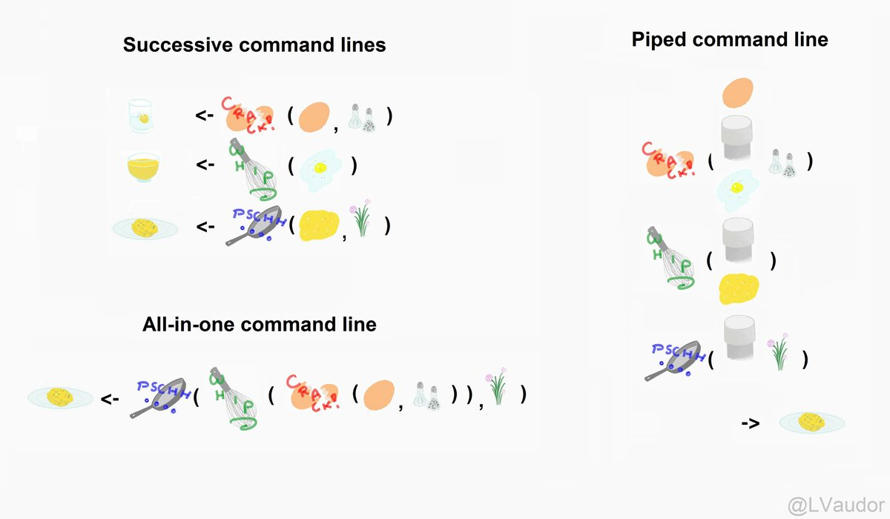
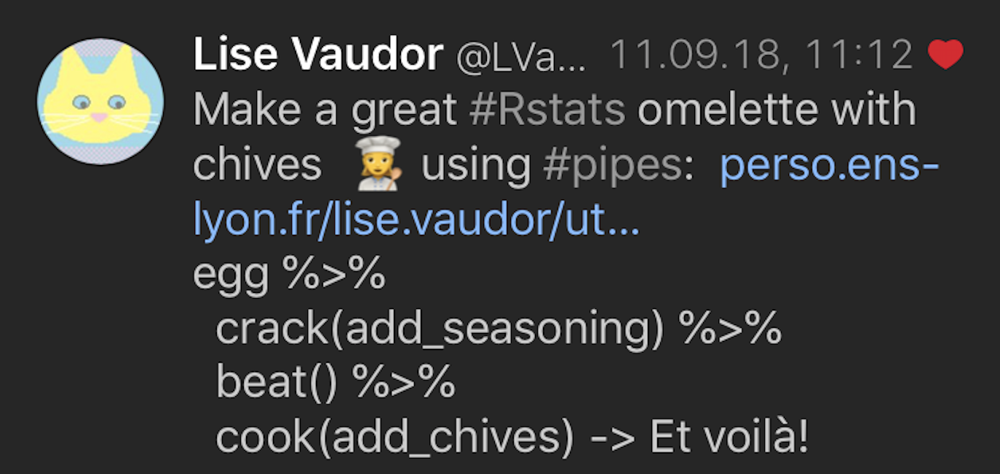
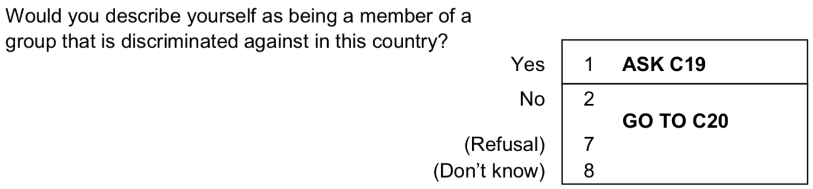
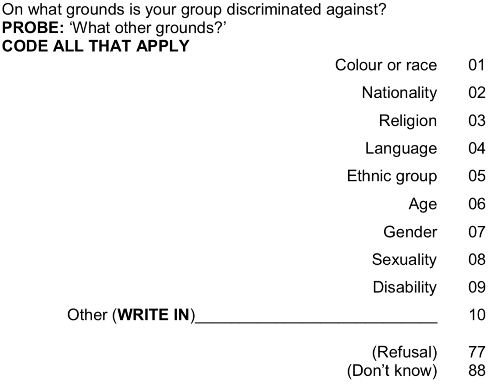

[1] 2.527274Einführung in R und Quarto
Piping & Grouped Operations
Andreas Haupt
Nested code
We have learned that R code may be nested. But too much nesting becomes unintelligible: Because R evaluates code from the inside-out, we need to read nested code from the inside-out!
Alternatively, we could write several lines of code successively and read from top to bottom. But this leads to many irrelevant intermediate objects that crowd our environment.
[1] 2.527274The (forward) pipe %>%
The %>% operator pipes output of one function as input to the next function. You can basically say: function(argument1 = value) can be written as value %>% function().
Or even easier, think of it as: “then” or “så”.
[1] 2.527274

Belonging to a
Discriminated Minority
::: {.centered} Homes of Alevis in western Turkey




:::
Library for today
Manipulating the ESS using %>%
Result of the piped code from last slide
The . (aka piping to specific arguments)
By default, %>% pipes into the first argument of a function.
You can find out what the first argument of a function is by typing ?function.
[1] 5.9[1] 5.9The . placeholder allows us to pipe into another argument.
[1] 5.88Why the . matters
For many (non-tidyverse functions), the data frame is not the first argument. Make sure to pipe into the argument which you actually intend to feed.
Advantages of piping (and when not to pipe)
The advantages are:
- Legible code: We can structure code from left to right, as apposed to from inside and out.
- Shorter code: You minimize the need for local/intermediate variables.
- Easily mutable code: You can easily add steps anywhere in the sequence of operations.
But:
- If you have more than one or two major inputs, don’t pipe.
- If you have more than ca. ten steps, better make intermediate objects.
- It helps you to debug (i.e., find mistakes) and is simply easier to read.
Reminder (Weights)
Weights tell you the probability that an observation should be in the data. For a true random sample, each case of the population has an equal probability to be sampled, and thus weights are 1 for all observations. But for various reasons, some populations tend to be under-sampled. Post-stratification weights try to counterbalance this.
Reminder (Working with weights)
Statistically, we use weights by multiplication. Say in a small imagined patriarchal society, men’s votes count twice as much. Here we have a ballot on whether women should be allowed to drive:
| i | gender | vote | voted_yes | weight |
|---|---|---|---|---|
| 1 | man | No | 0 | 2 |
| 2 | man | Yes | 1 | 2 |
| 3 | woman | Yes | 1 | 1 |
| 4 | woman | Yes | 1 | 1 |
| 5 | woman | No | 0 | 1 |
\[\frac{3}{5} * 100 = 60\] What is the patriarchy-weighted percent of “Yes” votes?
. . .
[1] 57.14286[1] 57.14286[1] 57.14286Grouped operations
Today, we want to compare countries. group_by() will transform your data into a grouped tibble. Afterwards, certain functions will operate on the level of those specified groups!
Grouped operations (summarize)
summarize() allows you to calculate all kinds of statistics on the level of the groups you have specified.
Reminder (Standard errors & confidence intervals)
The standard error tells you the standard deviation of your result (i.e., mean, percentage, \(\beta\) etc.), if we would conduct the same study (i.e., the ESS) over and over again.
Standard error of the mean: \(\text{SE}(\bar{x}) = \frac{ \text{SD(x)}}{\sqrt{n}}\)
Standard error of a proportion: \(\text{SE}(p) = \sqrt{\frac{p(1-p)}{n}}\)
The 95% Confidence Interval tries to capture the range in which the true value lies with an accuracy of 95%.
\[\text{CI}_{95} = \bar{x} \pm \text{Critical Value} * \text{SE}(\bar{x})\] \[\text{CI}_{95} = p \pm \text{Critical Value} * \text{SE}(p)\]
Interactive illustration (see original slides/link): Seeing Theory: Frequentist Inference
Grouped operations (Summarize)
summarize() allows you to calculate all kinds of statistics on the level of the groups you have specified.
Today’s general lessons
R code can be nested, but alternatively it can also be piped. Piping allows you two write more legible code that can be read from left to right and that does not contain several useless intermediate objects.
By grouping and summarizing you can quickly generate all kinds of summary statistics that allow you to describe your research phenomenon just as you want to; at best of course with ggplot2 figures ;)
Today’s (important) operators
%>%: the (forward) pipe, allows you to pipe the output of one function into the next function as input. By default, it will be channeled as value to the first function.value %>% function(argument1 = value)..: combined with the pipe, it allows you to pipe input to other arguments than the first.
Today’s (important) functions
group_by(): Subsets a tibble into groups. Certain functions will afterwards operate by each of the specified groups.summarize(): Allows you to estimate any kind of aggregate statistic. Combined withgroup_by(), it estimates those statistic by specified group.
n()counts the number of cases withinsummarize().sum()gives you \(\sum{}\).mean()andwtd.mean()give you the average.sd()andwtd.sd() %>% sqrt()give you the standard deviation.